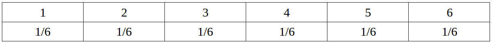
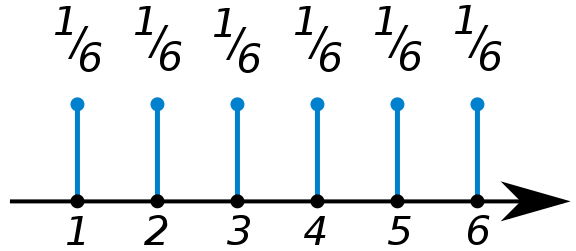
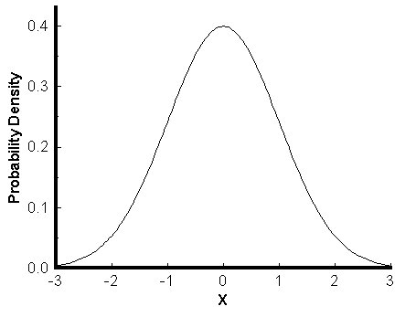
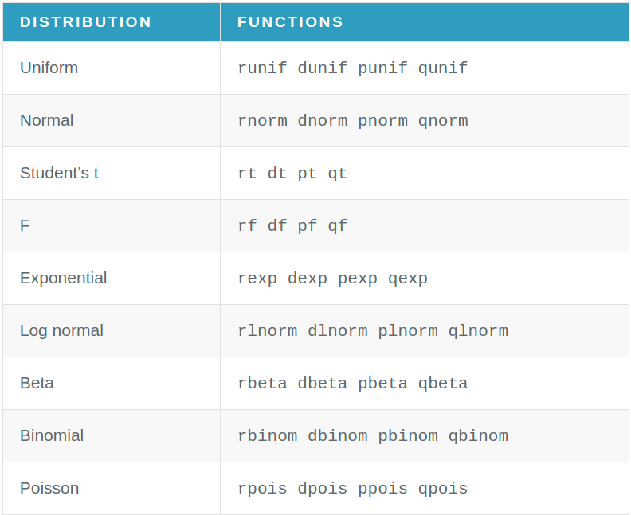
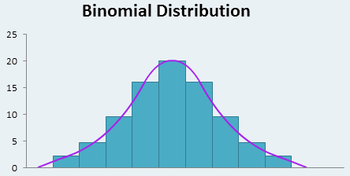

class: center, middle # Generating Random Data --- # Но първо още неща от предния път * още работа с dataframes * unstack * многомерни таблици * simple еквиваленти --- # Как си строяхме data frame? ```r weight <- c(150, 135, 210, 140) height <- c(65, 61, 70, 65) gender <- c('Fe', 'Fe', 'M', 'Fe') study <- data.frame(weight, height, gender) ``` --- # Начини да именуваме колоните и редовете: ```r # Наименуваме на колоните # 1. Когато ги създаваме: # study <- data.frame(w = weight, height, gender) # 2. с функцията colnames # colnames(study) <- c('w', 'h', 'g') # 3. с функцията names names(study) = c('w', 'h', 'g') # Наименуваме редовете row.names(study)<-c("Mary","Alice","Bob","Judy") rownames(study) <- c("Mary","Alice","Bob","Judy") ``` --- # Прикрепяне на данните ```r attach(study) detach(study) ``` --- # Можем да достъпваме данните и по индекси и по имена на редовете/колоните --- # Индексиране ```r study[1,1] study[,1] study[1,] study[,1:2] study[,c(1,3)] ``` --- # Взимане на колоните/редовете с дадени имена ```r # Взимане на колони по имена study[, 'w'] study[,c('w','g')] # Взимане на редове по имена (реда на Мери) study[’Mary’,] # Взимане на теглото на Мери study[’Mary’,’weight’] ``` --- # Извличане на данните по дадено условие ```r # Извличане на всички наблюдения, # с тегло под 200 килограма и височина над 60 сантиметра. study[study$w < 200 & study$h > 60, ] ``` --- # Unstack ```r data(PlantGrowth) PlantGrowth attach(PlantGrowth) ``` В тези данни има три групи в group: ctrl, trt1 и trt2 Може да разделим данните за всяка група, искаме по 1 масив с данните за всяка група (т.е. те като са три, искаме 3 масива) ```r ctrl = weight[group == "ctrl"] trt1 = weight[group == "trt1"] trt2 = weight[group == "trt2"] ``` --- <p>Ами ако бяха 20 групи?</p> <p>Ръчно да направим 20 масива?</p> <p>Много работа…</p> <p>На помощ идва:</p> ## unstack() <p>Тя приема df и формула:</p> ## unstack(df, df$a + df$d + df$b ~ df$f) <p>От лявата страна на формулата са векторите, които да се разбият, а дясната страна е векторът, по който разбиваме.</p> Тя връща раздробени данните по всяка от стойностите на вектора, по който разбиваме. unstack(PlantGrowth) boxplot(unstack(PlantGrowth)) --- # Многомерни таблици Помните, че table(x, y) връща двумерна таблица. table(x, y, z) връща по една двумерна таблица x на y за всяка стойност на z. table(x, y, z, t) връща по една двумерна таблица x на y за всяка комбинация на (z, t). --- ```r # Считаме кредитите за категорни, понеже са много малко # различните стойности, които приема - 4 на брой credits = c(3, 3, 5, 2, 3, 4) programs = c("ИС", "ИС", "КН", "СИ", "ИС", "КН") types = c("КП", "М", "КП", "КП", "М", "КП" ) table(types, programs) table(types, programs, credits) ``` --- # Scatterplot различни символи Ако искаме едните ни данни да са едни символи, другите с други, чертаем scatterplot и другите данни ги добавяме към съществуващата графика с points и му казваме да ползва символ - pch (plot character) от 1 до 18 ```r plot(x, y) points(x, z, pch="2") pch – plotting character, от 0 до 18 различни символи. weights = c(112.99, 136.49, 153.03, 142.34, 144.30, 123.30, 141.49, 136.46, 112.37, 120.67) heightBulgaria = c(66.49, 67.62, 68.30, 67.12, 68.28, 71.09, 66.46, 68.65, 71.23, 67.13) heightSerbia = c(65.78, 71.52, 69.40, 68.22, 67.79, 68.70, 69.80, 70.01, 67.90, 66.78) plot(weights, heightBulgaria) points(weights, heightSerbia, pch=2) ``` --- # Simple еквиваленти simple.scatterplot() scatterplot + histograms lines(density(x)) има еквивалент simple.densityplot(x) --- # Генериране на данни * Какво е разпределение? * Как R генерира данни? * Различни разпределия --- # Функцията sample sample(x, n, replace = T) sample(x, n, replace = F) replace – с връщане Генериране на събития с и без повторения Пример за събития с повторения е хвърлянето на зар. Пример за събитие без повторение е отбелязани числа на лотариен билет. Хвърляне на зар: sample(1:6, 10, replace=TRUE) #10 хвърляния на зар. Числа на лотариен билет: sample(1:49, 6) #по подразбиране replace=FALSE --- # Какво е разпределение? Променливата може да заема различни стойности и всяка стойност да я заема с някаква вероятност. СТОЙНОСТ → ВЕРОЯТНОСТ ДА ПОЛУЧИМ ТАЗИ СТОЙНОСТ Пример: да се падне 1, когато хвърляме зар. 1 е стойността, а вероятността е 1/6 това да се случи. Стойността, която променлива може да заеме се описва с разпределение. (probability distribution) вероятностно разпределение. --- ### Разпределението може да бъде таблица, графика или математическо уравнениe  <div style=" display: inline-block;">   </div> P(X = a) = 1/6 за a ∈ {1, 2, 3, 4, 5, 6} --- Когато се описва с функция, функцията при: * дискретна променлива се нарича probability mass function (PMF) * непрекъсната променлива се нарича probability density function (PDF) Това са функции на плътността. --- # Разпределението показва за всяка възможна стойност каква е вероятността тя да се падне. P(X = нещо) <p>При зарчето:</p> <p>P(X = 1) = 1/6</p> <p>P(X = 2) = 1/6</p> <p>…</p> <p>P(X = 6) = 1/6</p> --- # Функция на разпределението Има функция на разпределението (cumulative distribution function CDF) – сумата от вероятностите на наблюдаваме дадена стойност и всички стойности по-малки от нея. <p> F(X = a) = P(X = a | X < a)</p> <p> При зарчето:</p> <p> F(X = 2) – каква е вероятността да ни се падне 2 или по-малко от 2?</p> <p> F(X = 2) = P(X = 1) + P(X = 2)</p> --- Разпределението описва променливата. Като кажем, че Х има разпределение едикакво си, добиваме представа с някаква вероятност наблюдаваме дадена стойност. --- Правим експеримент, получаваме стойност. Повтаряме експеримента, получаваме нова стойност… Такива стойности от експерименти можем да генерираме с R. R може да ни даде някакви стойности, все едно наистина сме провеждали експеримента. ### Разпределението дава връзка между стойност и вероятност стойността да се падне. R може да ги генерира експерименти за променлива X, която е с дадено разпределение. R ни дава възможност да генерираме произволни числа в няколко различни вида разпределения. --- <table class="table"> <thead class="thead-inverse"> <tr> <th>Функция - където xxx е разпределението</th> <th>Цел</th> </tr> </thead> <tr> <td>rxxx</td> <td>Генерира експерименти от даденото разпределение</td> </tr> <tr> <td>dxxx</td> <td>Функцията на плътността за разпределението (P)</td> </tr> <tr> <td>pxxx</td> <td>Функция на разпределението</td> </tr> <tr> <td>qxxx</td> <td>Функция на квантилите</td> </tr> </table> <p>pxxx – колко е лицето на графиката наляво</p> <p>qxxx – коя е точката, така че наляво от нея лицето да е толкова?</p> ---  --- # Равномерно разпределение * непрекъснато * всички стойности в [a, b] се падат с еднаква вероятност (вероятността да наблюдаваме някаква стойност от интервала [a, b] е еднаква за всички тези стойности в интервала) --- # Равномерно разпределение в R runif(брой числа, минимална стойност, максимална стойност) Това ще ни генерира N на брой числа равномерно разпределени в даден интервал. Т.е. N числа в [a, b], които знаем, че могат да се паднат с еднаква вероятност. По подразбиране интервалът е [0,1] ```r runif(1,0,3) #генерира случайно число в интервала [0,3] x <- runif(50,0,5) hist(x, probability=TRUE, col="red", main="uniform data on [0,5]") curve(dunif(x, min=0, max=1),add=T) # Теоретична вероятност ``` --- # Нормално разпределение Генерира N на брой нормално разпределени числа. За да генерира тези числа/експерименти, на R му трябват: средно и стандартно отклонение. #### rnorm(брой числа, средно, стандартно отклонение) По подразбиране средното е 0, а стандартното отклонение 1. ```r #генериране на 10 резултата от IQ тест. y <- rnorm(10,100,16) hist(y, probability=TRUE, col="blue", main="normal data with mean=100, sd=16") Теоретичното разпределение се чертае така: curve(dnorm(x, mean=100,sd=16), add=T) dnorm връща теоретично разпределение във всяка точка, а curve просто го чертае (чертае точките). ``` --- Пример: На преподавател не му се проверявало, но искал да покаже някакви резултати от второто контролно на ИС. Затова решил да генерира произволни резултати и използвал R. Разгледал резултатите от предходното контролно и забелязал, че: mean = 4 sd = 1.1 За да ги генерира, той ползвал нормално разпределение: rnorm(80, mean = 4, sd =1.1) --- # Биномно разпределение Разпределението на данните е спрямо успеха при N независими Бернулиеви опита. Бернулиев опит е такъв, при който резултата е или успех или неуспех. ### rbinom(брой проведени експерименти, брой опита в експеримент, вероятност за успех) Експеримент: Хвърляме 6 пъти зар Резултат: Колко пъти се е паднало 1. (пример: 3 пъти) Ако проведем експеримента 30 пъти, очакваме резултати от вида: 0 0 3 0 1 0 1 1 2 1 1 1 0 1 1 2 1 1 0 2 --- R може да ни генирира такива резултати така: ```r rbinom(30, 6,1/6) s <- rbinom(30, 6,1/6) table(s) hist(rbinom(100, 5, 0.25), probability=TRUE) # Прилича много повече на нормално # Колкото повече опити в биномно разпределение, толкова # повече то прилича на нормално hist(rbinom(100, 100, 0.25), probability=TRUE) ```  --- # Експоненциално разпределение Приема параметър, който е 1/mean * Примери в истинския живот: надеждност, живот на уред, система * Свойство: безпаметност (ще го видите на упражнения) Пример: Установено е, че животът на електрическа крушка е експоненциално разпределено. Средно животът е 2500 часа. → параметърът е 1/2500 Синтаксис: rexp(брой числа, параметър) ```r x = rexp(100,1/2500) hist(x, probability=TRUE, col=gray(.9), main="exponential mean=2500") curve(dexp(x,1/2500),add=T) ```